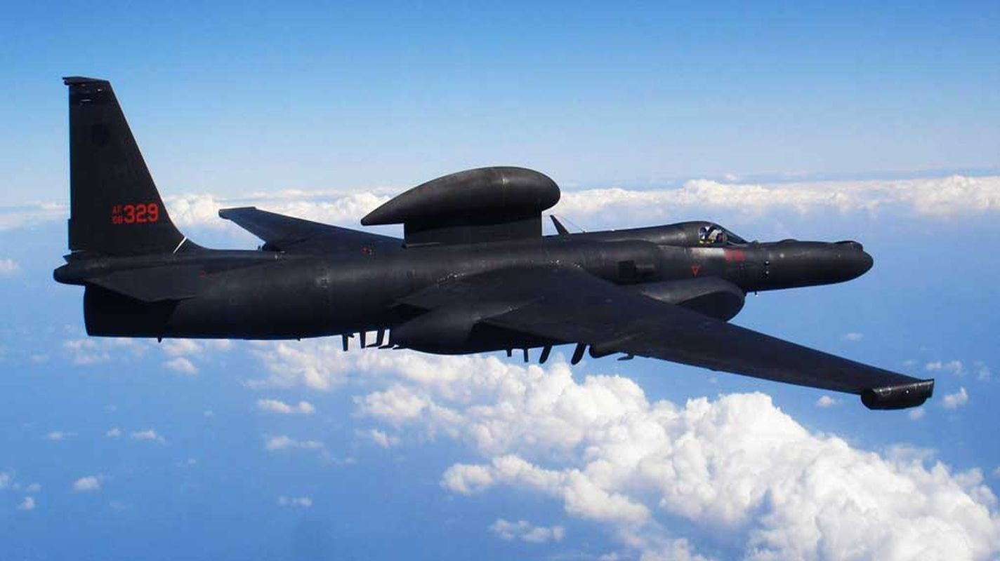
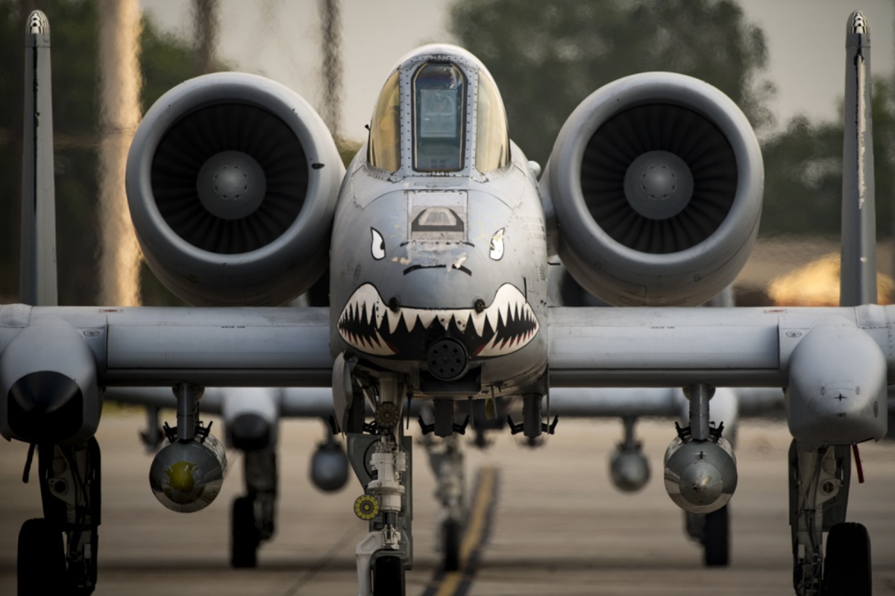

My name is Christopher McMinn, but I prefer to go by CJ. I currently work in the Air Force as a Crew Chief and I have worked on a few different aircrafts during my time. I recently moved to Shaw, AFB in South Carolina, which in turn assigned me to an F-16 Squadron. Prior to this change, I was on the U-2S Spy Plane and the A-10C Attack aircraft. My major is in computer programming and I am about halfway done with it! I have decided to pursue this as my major because I constantly have the thought that there is an easier, a better, or a more efficient way to complete a task. For example, someone can turn a manual task into a task that can be completed with a simple mouse click, just by writing some code.
 
I have more hobbies than I can afford! But currently, I am spending the most of my time and money on competitive shooting in the United States Pistol Association (USPSA). I enjoy this hobby because it requires a lot of skill and there is an athletic element to it. However, in the past I have dabbled in skateboarding, woodworking, snowboarding, motocross, sport bikes, racecars, RC planes, programing microcontrollers, and computer gaming.Unfortunately, my wallet cannot afford all of these at one time so I must make some sacrifices to be able to enjoy something.
Here is the link for USPSA if you interested in looking into it.
USPSA
Here is the link for Air Force reqruiting if your interested in joining the Air Force.
Air Force Recruiter
Here are the Wiki pages for all three of the aircraft I have worked.
U-2S
A-10C
F-16CM